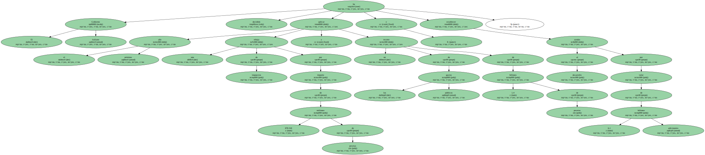
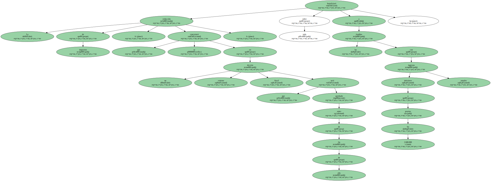
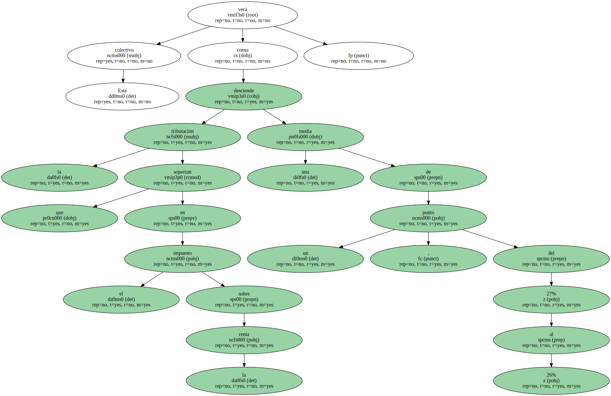
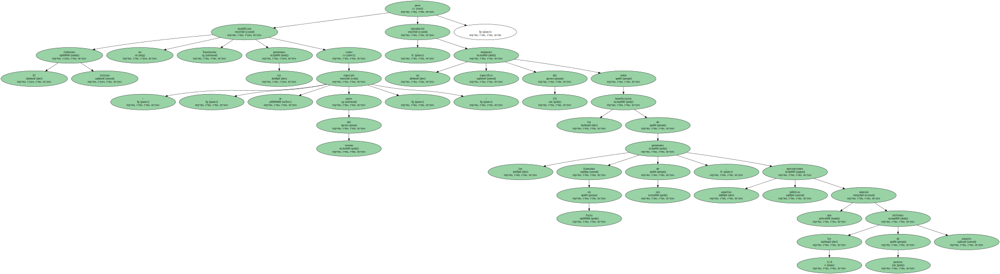
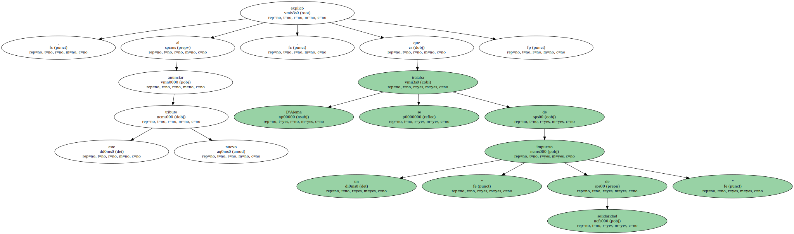
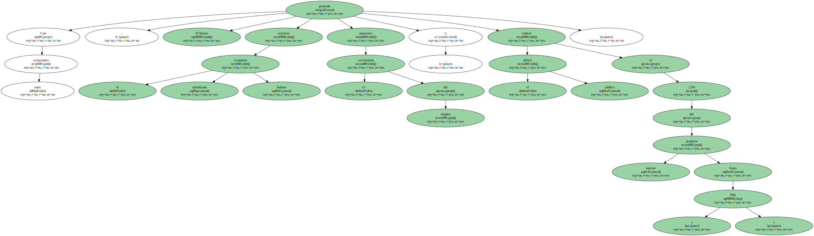
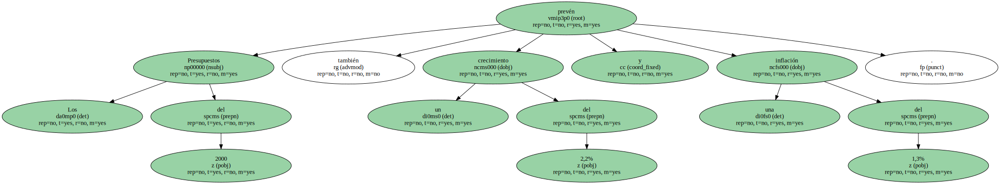
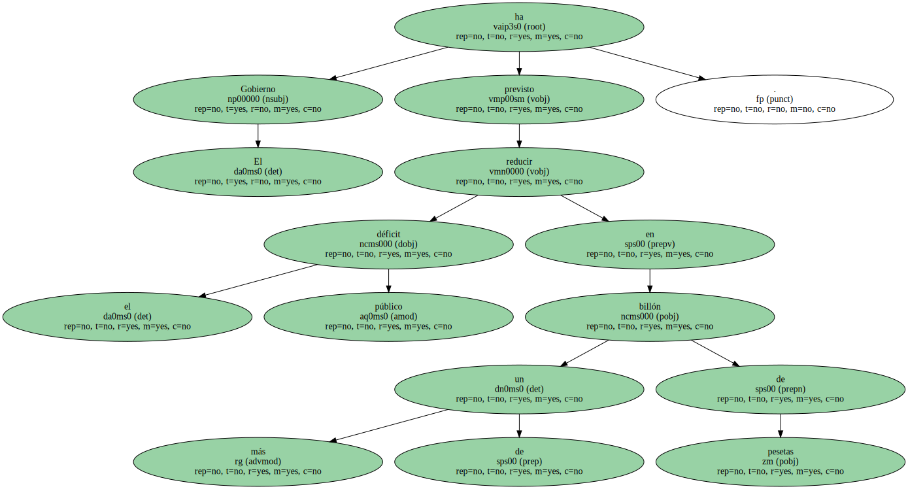
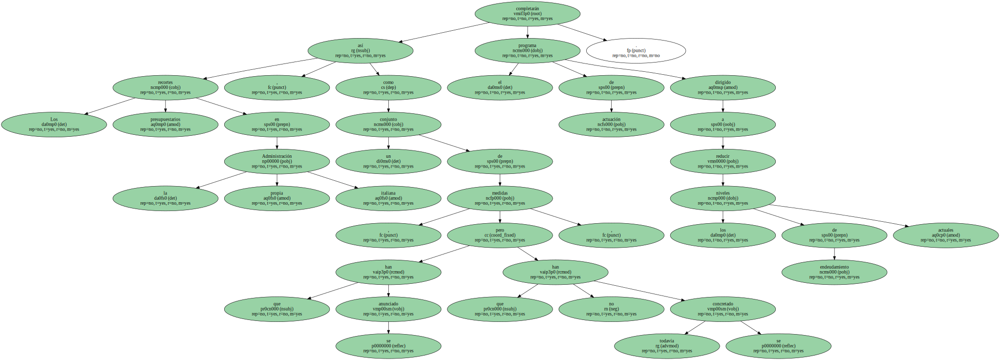
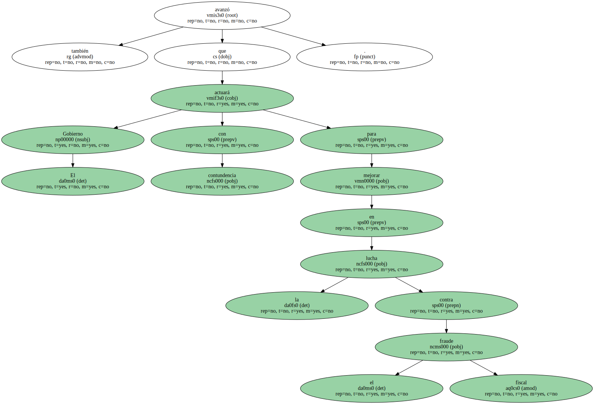

El Gobierno italiano ha decidido aplicar el próximo año una rebaja de impuestos por importe de 878.518 millones de pesetas y un recorte de los gastos públicos de 1,4 billones de pesetas , y establecer ayudas al desarrollo por valor de 6,1 billones adicionales.
Así lo señaló el presidente del Ejecutivo , Massimo D'Alema , al presentar el proyecto de presupuestos públicos para el 2000.

La reducción de impuestos , que se concretará en un extenso decreto fiscal que será aprobado antes de fin de año , beneficiará sobre todo a las familias con ingresos inferiores a los 2.600.000 pesetas anuales.
Este colectivo verá como la tributación que soportan en el impuesto sobre la renta desciende una media de un punto , del 27% al 26%.
El Gobierno italiano no modificará finalmente las pensiones - - como se especuló antes del verano - - , pero introducirá un impuesto específico del 2% sobre los beneficiarios de las llamadas en Italia pensiones de oro , aquellas percepciones públicas que superan los 11,8 millones de pesetas anuales.
D'Alema explicó , al anunciar este nuevo tributo , que se trataba de un " impuesto de solidaridad ".
Con estas actuaciones , D'Alema pretende reactivar la ralentizada economía italiana , promover el crecimiento del empleo y reducir el déficit público al 1,5% del producto interior bruto ( PIB ).
Los Presupuestos del 2000 también prevén un crecimiento del 2,2% y una inflación del 1,3%.
El Gobierno ha previsto reducir el déficit público en más de un billón de pesetas.
Los recortes presupuestarios en la propia Administración italiana , así como un conjunto de medidas , que se han anunciado pero que todavía no se han concretado , completarán el programa de actuación dirigido a reducir los niveles de endeudamiento actuales.
El Gobierno también avanzó que actuará con contundencia para mejorar en la lucha contra el fraude fiscal.
El proyecto " permite cumplir con los objetivos del Pacto de Estabilidad presentado en la Unión Europea sin alarma ni sacrificio de los ciudadanos " , subrayó D'Alema.